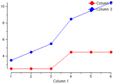

|
CCP4i: Graphical User Interface |
| The Loggraph Utility |


|
Many CCP4 programs output tables of data in their log files which can be interpreted and displayed as graphs. Each table has a name and the columns of the table have labels. Associated with each table is a list of useful graphs which could be created from the data in the table. Each graph has a title and a list of the columns of data which will be depicted in the graph. The first listed column will be used as the x-axis.
Accessing Loggraph is usually done through the View Log Graphs option in the View Files from Job pop-up menu. This option is directly linked to a specific job, and thus to a specific log file.
In case you want to access Loggraph outside the Interface, you can select an input file by entering the name on the command line, e.g.
> loggraph insulin_scaleit.log
or using the file browser accessed from the File pull-down menu (as soon as you are in Loggraph). If a file is entered on the command line, its file type will be interpreted from the file extension (.log or .dat) and the appropriate format will be expected. The file browser has a pop-up menu to specify the file format.
Loggraph displays the graphs from CCP4 log files (file extension .log) and also from data files with simple columns of data (expected to have file extension .dat). Note that loggraph is not currently very smart in reading column data but could be improved to ignore header lines etc.. All the data from one column data file will be put into one table. An example of a .dat file that can be read by Loggraph:
1 2.5 3.5 2 2.5 4.5 3 2.5 5.5 4 4.5 8.5 5 4.5 9.5 6 4.5 10.5 |
 |
The list of tables in the log file is shown below the graph frame. Select a table, and the graphs available from that table will be listed at the bottom of the window. Select a graph to be displayed in the graph frame.
The position of the cross-wires over the graph is reported on the right hand side of the title line. If the cross-wires are close to a data point, the exact position of that data point is also reported.
You can expand the graph by expanding the Loggraph window.
On the Edit pull-down menu are checkbuttons to toggle on and off the display of each line in the graph. The different lines on a graph can be distinguished by any combination of different colours, line styles and symbols. You can toggle the use of the different features on the Appearances pull-down menu. The same menu also has a Customise Style option which gives you a dialog box listing, by default, eight different styles. You can edit these or add extra styles. At the top of the dialog box is an option to set the default line width and symbol size.
If the x-axis of the graph is labelled '1/resol^2' then, by default, the labelling on the x-axis will be converted into resolution in Ångström. This action can be disabled by toggling the Resolution checkbutton on the Appearances pull-down menu.
On the Edit pull-down menu is the option to edit Titles&Legends for the currently selected graph. There are also options to hide the legends, and to control where the legend box is drawn within the graph plotting area.
On the Utilities pull-down menu is the option to Zoom in on part of the currently selected graph.
After selecting this option, use the left mouse button to define a zoom window. Click at the position you want at top left, move the cursor to the bottom right and click again. The graph will zoom in on this window. Click the right mouse button to go back to the previous view.
On the Edit pull-down menu is the option to Add annotation.
After selecting this option, use the left mouse button to select where in the graph you want the text to appear (or the right mouse button to cancel). An editing window will appear which allows you to enter the text you require (add \n in the text to get multiple lines). You can also change the text colour and orientation (angle).
Use the Apply button on the window to apply the changes, the Move button to select a new position (you can also edit the x and y coordinates directly), and the Delete button to delete the annotation.
To edit existing annotation, double click with the left mouse button on the text to be edited. This brings up the editing window again. To clear all the annotation at once, select the Delete all annotation option under the Edit pull-down menu.
On the Utilities pull-down menu is the option to Display the selected graph as a table. This opens a separate text window which displays the data plotted in the current graph in tabulated form.
Before plotting, it is useful to adjust the loggraph window size to get a suitable aspect ratio for the graph. The Print Graph option on the File pull-down menu allows you to plot directly to colour or monochrome printer, save to a postscript file or preview the plot with ghostview or xv. The printers and preview mechanism must be defined appropriately for your site in $CCP4_top/etc/configure.def (see Configuration).
By default, different lines on monochrome plots will be distinguished by different line styles and symbols even if these features are not used on the currently displayed graph - you can switch off these features in the Print Graph dialog box.
For information on the X-windows version of the program, see XLOGGRAPH.
|
|
Valid XHTML 1.0! Valid CSS! |